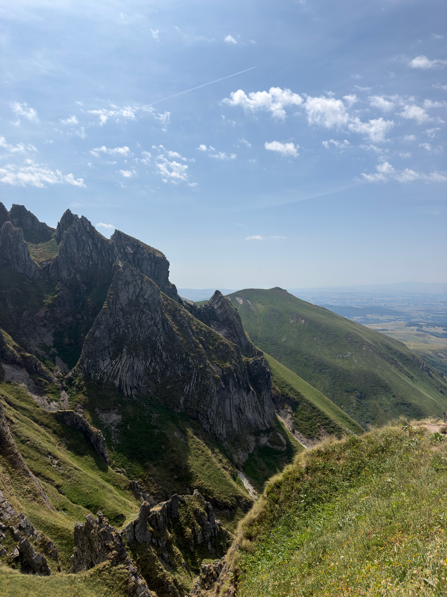
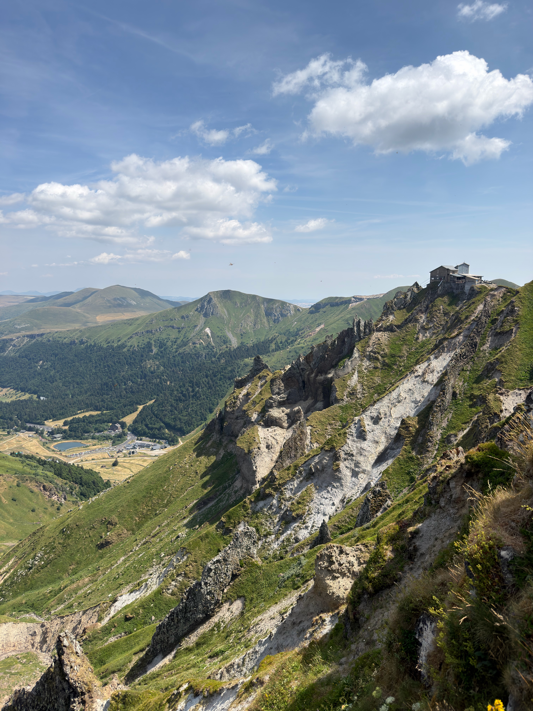
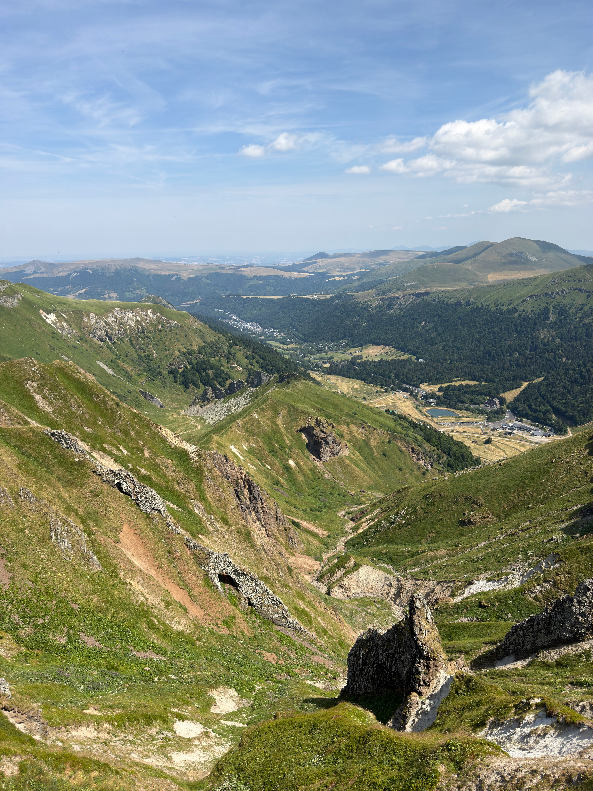

J'étais venu pour le puy de Sancy, et le Sancy était très bien, qu'on se le dise. Mais en remontant vers le nord, il y a eu ce moment où la chaîne des Puys s'est déroulée devant moi, et le Sancy est devenu un souvenir. Pardon, le Sancy.
Ce qu'on voit d'en haut n'existe nulle part ailleurs en France : des dizaines de volcans endormis, alignés sur quarante kilomètres comme si quelqu'un les avait posés là exprès. Et attention : pas de forêts sombres ni de paysage lunaire. Juste de la verdure : de l'herbe et de la lande posées directement sur les cônes, qui soulignent chaque cratère, chaque pente, chaque égueulement. Le relief est nu, lisible, dessiné.
À 16h32, la lumière commençait à raser et chaque cône projetait son ombre sur le suivant. C'est là que l'alignement devient évident, presque graphique. On dirait une rangée de bols verts retournés sur une nappe. L'ensemble est classé au patrimoine mondial de l'UNESCO et franchement, vu du ciel, on signe des deux mains.
Détail qui m'a eu : le silence. Pas le silence de la montagne, qui siffle toujours un peu, un silence épais, végétal, où le seul bruit était mes hélices au loin. Des géants qui dorment sous une couverture verte : je n'ai pas trouvé de meilleure description, alors je la garde.
Et pour être juste avec le Sancy, parce qu'il l'a largement mérité, voici ce qu'il offrait vu du drone, de son côté du massif. Là où la chaîne des Puys est toute en rondeurs d'herbe, le Sancy sort les griffes : des aiguilles de dentelle volcanique, des crêtes déchiquetées, un tout autre caractère.

les aiguilles du Sancy, de la dentelle volcanique
la gare du téléphérique, posée sur la crête comme un nid
la vallée qui plonge, et les puys qui moutonnent tout au fond